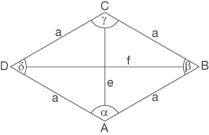

Aufgabe 6.5
- Weisen Sie die Formel nach, die die Diagonalen verwendet.
- freiwillig: Leiten Sie die zweite Formel aus den ersten Formel her.
- Wie hängen die Diagonalen mit den Seiten und Winkeln zusammen?
- Nutzen Sie die rechtwinklige Teilung der Diagonalen
- Welche trigonometrischen Beziehungen gelten in den Teildreiecken?
- Erinnern Sie sich an $\sin(2\alpha) = 2\sin(\alpha)\cos(\alpha)$
Gegeben: Rhombus (Raute) mit Seitenlänge $a$, Innenwinkel $\alpha$ und $\beta = 180° - \alpha$, sowie Diagonalen $e$ und $f$

- Herleitung der Diagonalenformel
Die Diagonalen des Rhombus halbieren sich rechtwinklig im Mittelpunkt. Dies teilt den Rhombus in vier kongruente rechtwinklige Dreiecke.
Schritt 1: Flächenberechnung mit Diagonalen
Jedes der vier Teildreiecke hat:
- Kathete 1: $\frac{e}{2}$
- Kathete 2: $\frac{f}{2}$
- Fläche: $\frac{1}{2} \cdot \frac{e}{2} \cdot \frac{f}{2} = \frac{ef}{8}$
Der gesamte Rhombus besteht aus vier solchen Dreiecken: $$A = 4 \cdot \frac{ef}{8} = \frac{e \cdot f}{2}$$
Alternativ: Der Rhombus lässt sich als zwei Dreiecke mit Grundseite $e$ und Höhe $\frac{f}{2}$ auffassen: $$A = 2 \cdot \frac{1}{2} \cdot e \cdot \frac{f}{2} = \frac{e \cdot f}{2}$$
Damit ist die Diagonalenformel nachgewiesen: $\boxed{A = \frac{e \cdot f}{2}}$
- Herleitung der Winkelformel aus der Diagonalenformel
Wir drücken $e$ und $f$ über trigonometrische Beziehungen in Abhängigkeit von $a$ und $\alpha$ aus.
Schritt 1: Beziehungen in den rechtwinkligen Teildreiecken
In den rechtwinkligen Teildreiecken (mit Hypotenuse $a$ und den halben Diagonalen als Katheten) gilt:
\begin{align*} \cos\left(\frac{\alpha}{2}\right) &= \frac{\frac{e}{2}}{a} \quad \Rightarrow \quad \frac{e}{2} = a \cdot \cos\left(\frac{\alpha}{2}\right)\\ \sin\left(\frac{\alpha}{2}\right) &= \frac{\frac{f}{2}}{a} \quad \Rightarrow \quad \frac{f}{2} = a \cdot \sin\left(\frac{\alpha}{2}\right) \end{align*}
Schritt 2: Einsetzen in die Diagonalenformel
\begin{align*} A &= \frac{e \cdot f}{2} \\ &= \frac{1}{2} \cdot \left(2 \cdot a \cdot \cos\left(\frac{\alpha}{2}\right)\right) \cdot \left(2 \cdot a \cdot \sin\left(\frac{\alpha}{2}\right)\right)\\ &= \frac{1}{2} \cdot 4a^2 \cdot \cos\left(\frac{\alpha}{2}\right) \cdot \sin\left(\frac{\alpha}{2}\right)\\ &= 2a^2 \cdot \sin\left(\frac{\alpha}{2}\right) \cdot \cos\left(\frac{\alpha}{2}\right) \end{align*}
Schritt 3: Anwendung des Doppelwinkel-Theorems
Mit dem Additionstheorem für den Sinus: $$\sin(\alpha) = 2\sin\left(\frac{\alpha}{2}\right)\cos\left(\frac{\alpha}{2}\right)$$
folgt: $$A = a^2 \cdot \sin(\alpha)$$
Alternative mit $\beta$:
Da $\beta = 180° - \alpha$, gilt: $\sin(\beta) = \sin(180° - \alpha) = \sin(\alpha)$
Daher: $A = a^2 \cdot \sin(\beta)$
Damit ist die Winkelformel hergeleitet: $\boxed{A = a^2 \cdot \sin(\alpha) = a^2 \cdot \sin(\beta)}$
Bemerkung: Diese Formel ist ein Spezialfall der allgemeinen Parallelogramm-Formel $A = a \cdot b \cdot \sin(\gamma)$, wobei beim Rhombus $a = b$ gilt.
Im Video: Etappe 6 · Das Ergänzungsprinzip bei 4:03